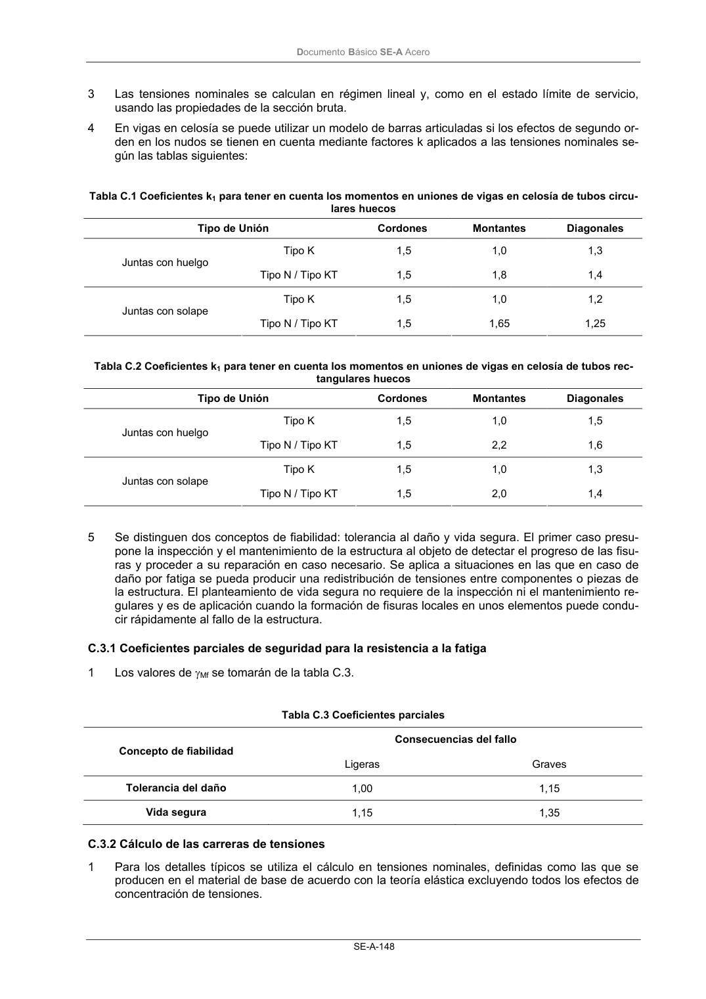

DB-SE-A · Página 150 · versión 2007-10-23
SHA256: 9ed9ea694aabfbda3bfbbef40dfe9223fde05d13c35bc2ba9751e5a96a22a64f · página física 150 de 168 · métodos de encabezado
solo si están cotejados.
Documento · ← p. 149 · p. 151 →
Formatos: Markdown · JSON de bloques · PDF p. 150 · imagen PNG
Documento Básico SE-A Acero SE-A-148 3 Las tensiones nominales se calculan en régimen lineal y, como en el estado límite de servicio, usando las propiedades de la sección bruta. 4 En vigas en celosía se puede utilizar un modelo de barras articuladas si los efectos de segundo or- den en los nudos se tienen en cuenta mediante factores k aplicados a las tensiones nominales se- gún las tablas siguientes: Tabla C.1 Coeficientes k1 para tener en cuenta los momentos en uniones de vigas en celosía de tubos circu- lares huecos Tipo de Unión Cordones Montantes Diagonales Tipo K 1,5 1,0 1,3 Juntas con huelgo Tipo N / Tipo KT 1,5 1,8 1,4 Tipo K 1,5 1,0 1,2 Juntas con solape Tipo N / Tipo KT 1,5 1,65 1,25 Tabla C.2 Coeficientes k1 para tener en cuenta los momentos en uniones de vigas en celosía de tubos rec- tangulares huecos Tipo de Unión Cordones Montantes Diagonales Tipo K 1,5 1,0 1,5 Juntas con huelgo Tipo N / Tipo KT 1,5 2,2 1,6 Tipo K 1,5 1,0 1,3 Juntas con solape Tipo N / Tipo KT 1,5 2,0 1,4 5 Se distinguen dos conceptos de fiabilidad: tolerancia al daño y vida segura. El primer caso presu- pone la inspección y el mantenimiento de la estructura al objeto de detectar el progreso de las fisu- ras y proceder a su reparación en caso necesario. Se aplica a situaciones en las que en caso de daño por fatiga se pueda producir una redistribución de tensiones entre componentes o piezas de la estructura. El planteamiento de vida segura no requiere de la inspección ni el mantenimiento re- gulares y es de aplicación cuando la formación de fisuras locales en unos elementos puede condu- cir rápidamente al fallo de la estructura. C.3.1 Coeficientes parciales de seguridad para la resistencia a la fatiga 1 Los valores de γMf se tomarán de la tabla C.3. Tabla C.3 Coeficientes parciales Consecuencias del fallo Concepto de fiabilidad Ligeras Graves Tolerancia del daño 1,00 1,15 Vida segura 1,15 1,35 C.3.2 Cálculo de las carreras de tensiones 1 Para los detalles típicos se utiliza el cálculo en tensiones nominales, definidas como las que se producen en el material de base de acuerdo con la teoría elástica excluyendo todos los efectos de concentración de tensiones.
